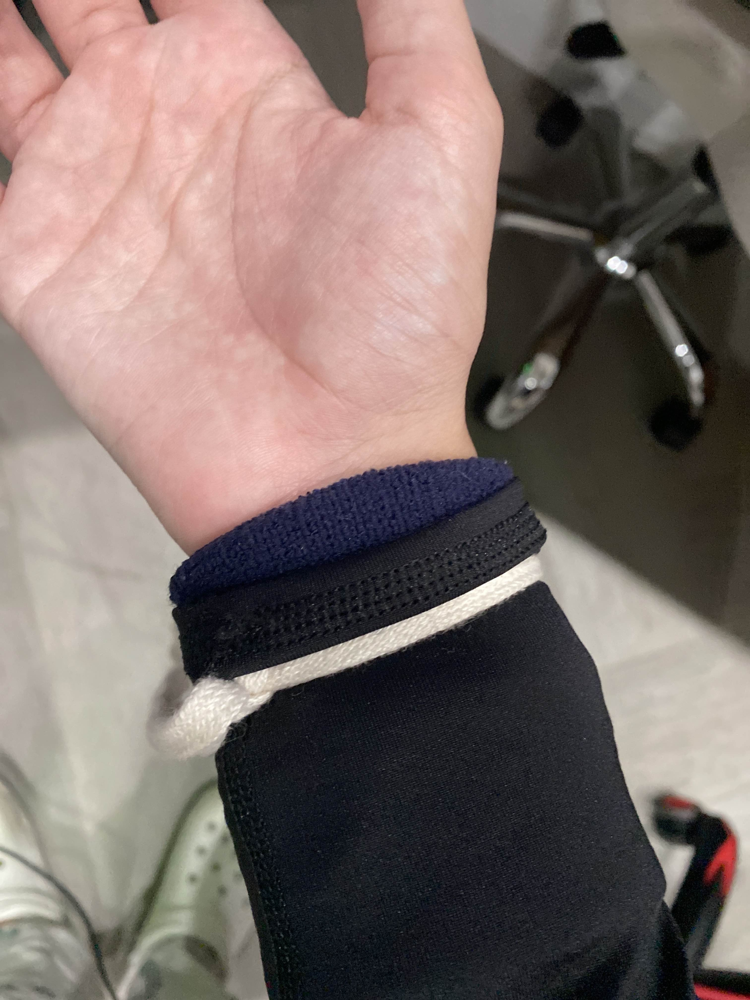
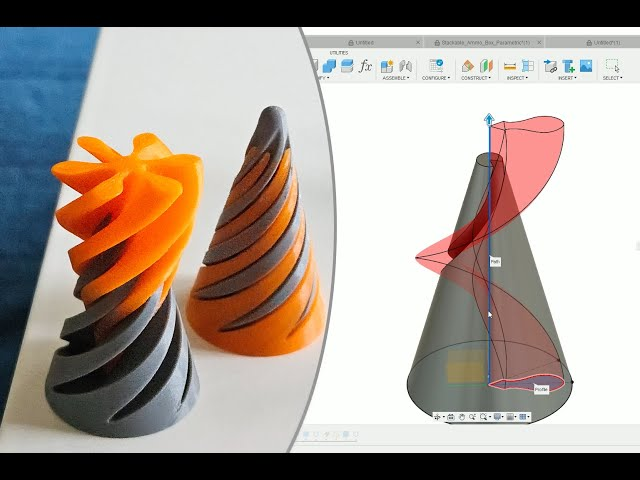
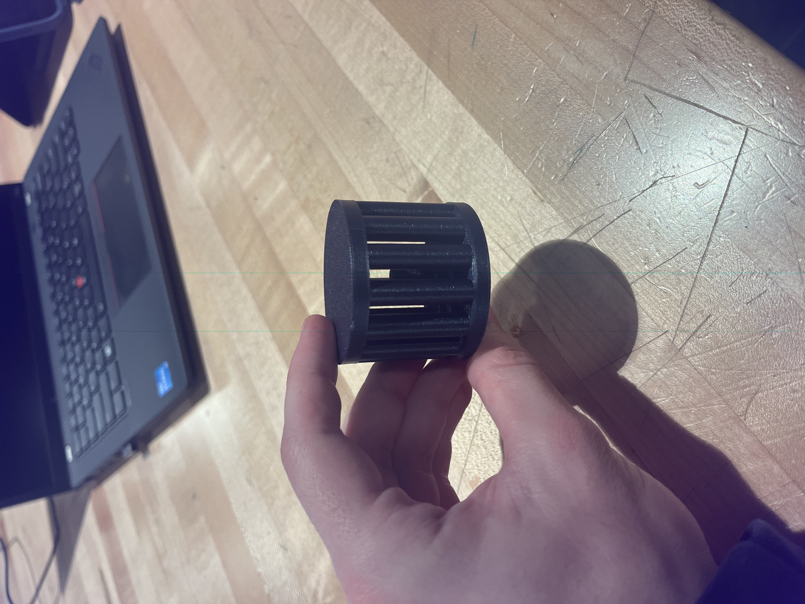
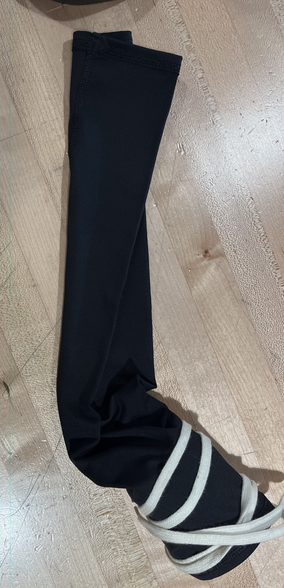
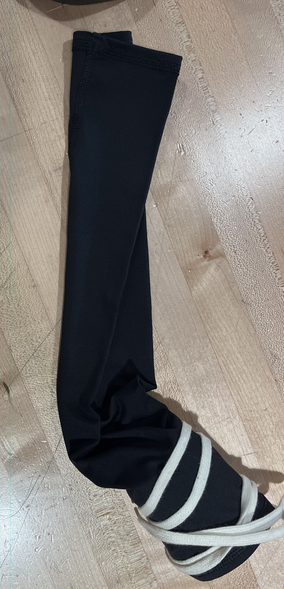

Daily Updates
January 6 2025
This was our first day back from break but during break we were able to continue testing our first prototype by using it in our various activites during break. During this continued testing we were able to start developing how to fix the problems caused by the first design and got more opinions from others regarding our design. This mainly included problems with the looseness around the lower arm and a little less desirable wrist support than we wanted.
January 8 2025
Here I began to focus on one of the mini projects we were assigned where we had to make a 3D model of something that could not be made through deductive methods. I at first began to work on a sort of cone fidget thing (image above) but noticed that not only is the process to make this a little harder than anticipated, it was also something I would not really enjoy making.
January 10 2025
Today I worked and finished my 3D design of the first part of the mini project where you can read more about my process in the 3D scanning and printing section. Above you can see the final project of the 3D model and it makes for a very fun fidget toy.
January 14 2025
Today I learned and did the second part of the mini project which was the 3D scanning part. Again you can read more about this in the 3D scanning and printing section where I documented my processes of each.
January 16 2025
I spent most of today just updating and fixing my website as I had to submit a couple of assignments. I fixed some grammar, added pictures, and added this section for my groups continued testing and prototyping.
PLTW Capstone: Testing Implementation and Analysis
1. Test Execution Documentation
12/30/24- Christopher Garcia uses the prototype in a humid area while playing basketball to check the change in the sleeve, none shown.
2/13/25- Our first test was handled within a controlled environment within a building as this is where we intend our product to be used the most. The tester used the product for 10-15 minutes and reported that it felt very comfortable. The only issue they seemed to have was the fact that the inner wrist insulation would sometimes slightly down which was a little awkward to re-adjust for the tester.
2/17/25- Our second test was handled similarly but over a longer period of time being 30 minutes. Most of the feedback was similar; the tester reported a similar issue with the inner wrist cushion however to a much lesser extent.
2/20/25- Our final tester able test for around 50 minutes. In this test the user reported that our product was very comfortable and hoped to be able to use it for long writing assignments. No issue with the cushion reported, it seems to vary with the size of a person's forearm/wrist.
Qualitative data: No quantitative data available due to the nature of our project. Our qualitative data was gathered through our testing, some of it included praise for our product’s comfortability as well as ease of use. Some feedback received was the fact that the inner wrist component would move around very slightly as well as it depending on the size of the forearm while being used which caused some of our testers to feel a bit uncomfortable by having to re-adjust it once in a while. We were also recommended to remove some of the fabric in order to not fully cover the arm as the part that fully covers the arm does not provide much support and instead just causes heat to build up in the area.
Prototype performance against design specifications: Our prototype performed quite well even without a glove, it was stable and offered a comfortable experience for our users with little to no complaints.
Evidence-based conclusions and recommendations: from our testing and feedback we could improve our project to encompass more forearm sizes, but the movements in the inner wrist component were very minimal which our testers reported. We recommend the product to be used by a person with a smaller to medium sized forearm as it fits perfectly for those sizes.
Environmental conditions during testing Team members present and roles: Humid conditions-Christopher (tester and documenter) Windy and Chilly conditions-Christopher (tester and documenter) Room temperature and controlled-Christopher (tester) Noah (documenter)
2. Data Analysis
Quantitative Analysis (not possible given the nature of our project)
From our data we were able to analyze the fact that our prototype was very successful but we look to improve it given the feedback we received from testers. These are just small changes considering how well received our prototype was but the quality of life changes should allow our product to be that much better. We will also keep ourselves. open to any further improvements possible to our product.
3. Results Presentation
 

The images above demonstrate a timeline of our prototype to where it is as of now, we will obviously keep improving as needed but this provides a baseline as to where our group is at now.
All tests were conducted within a controlled environment with no breaches of safety at any point. Adittionaly, No anomalies occurred during testing which allowed for a very smooth process for both us and our testers.
Compared to our design we lacked a glove component which seemed to have no glaring negative effects on our users' experiences.
User feedback was very positive with feedback indicating very slight movement in the inner wrist component which would only need to be slightly adjusted by users.
4. Conclusions and Recommendations
Our prototype performed very well in its testing and held up in almost all varied environments which surprised us in a very good way. This meaning that, the feedbackof our prototypes were very positive where we expected a more critical reception of them by our testers.
Overall, our results were very positive from feedback received by testers and users alike. We look forward to improving further on our final product in order to ensure our users receive the best experience as well as a product they want to use in everyday life. We want our product to be versatile and easy to use. For our recommendations of use we so far recommend use times to be a maximum of an hour as that is the extent of our longest test that still provided a comftorable experience for users, since we have not tested any periods of time longer than an hour. We also recommend our users to use the sleeve in a more stable environmet, while it did prove to hold very well in more extreme environments we found that it is best used in an office or home setting.
Daily Updates 2/11/25-2/24/25
2/11/25
This day our group prepared for our second couple rounds of testing we finalized our prototype for use which can be seen above in the Testing Implementation Analysis document above. This is not our final product and we are planning to improve upon it after testing, once we recieve feedback.
2/13/25
This is the first test of our second batch we perform. In this test we simply wanted to see how our product performed in a controlled environment in which it is mainly intended to be used. This test was a little shorter as we just wanted to have a baseline which would allow us to gather more information on elements that differ on a user to user basis. This is also when I was able to get my silicone mold back of the dog that I silicone molded you can see more of that on the molding and silicone page.
2/18/25
Today we documented the feedback of our testers and I was able to start a plan to improve our prototype in order to satisfy the complaints from our testers so far.
2/20/25
We were able to perform one of our most extensive tests today on one of our classmates, Brian, in which he had the wrist brace on for about 50 minutes to an hour which allowed us to gather a lot of data. For example, he said that the inner brace did not move at all which provided us proof that this product does differ on a user to user basis given forearm and wrist sizes.
2/24/25
Today I mainly just updated my website and started to finish work on the Testing Implementation and Analysis document. I polished any typos present and also began work on this part you are reading right now.